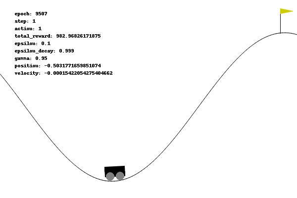
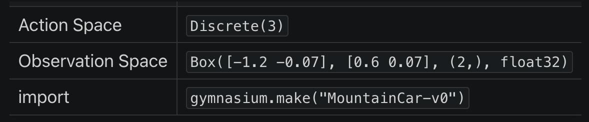
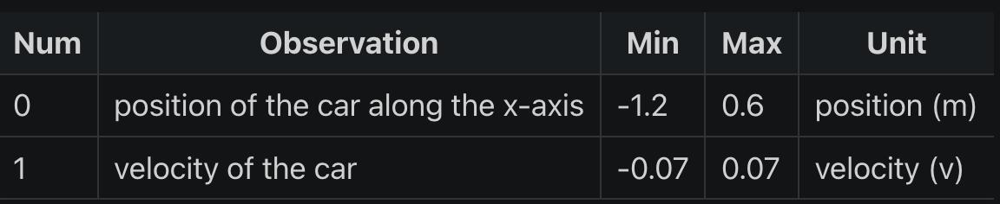
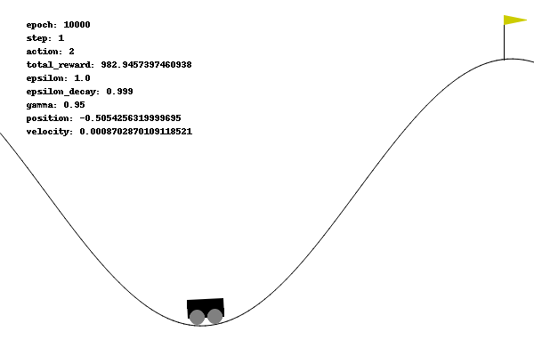
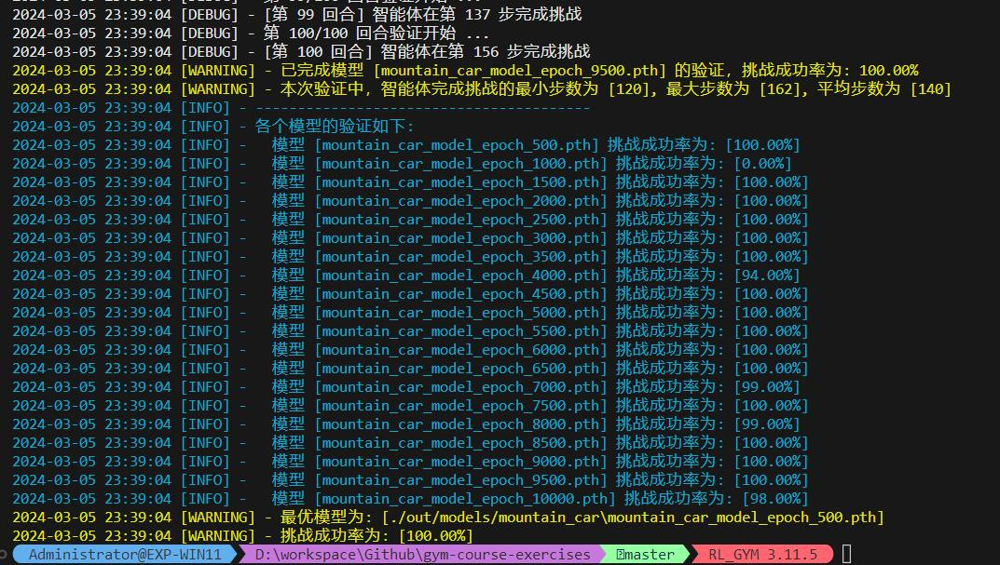
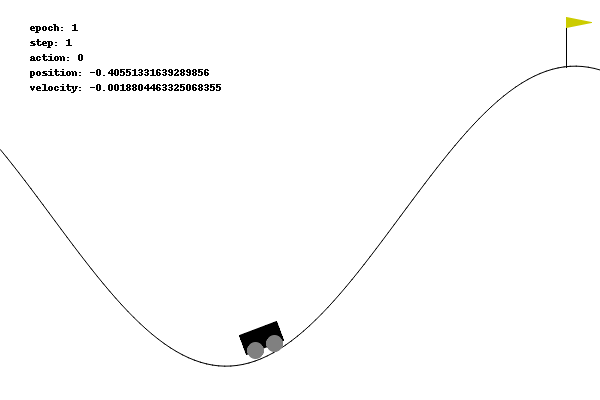

0x00 问题描述
Mountain Car 是一种确定性 MDP（马尔可夫决策过程）问题：
目标是控制一个无法直接攀登陡峭山坡的小车，使其到达山顶。
但小车的动力不足以直接爬上山坡，所以必须利用山坡的反向坡度来获得足够的动量：

0x10 问题解读
从 Mountain Car 页面的描述中，我们可以得到不少关键信息：
0x11 环境说明

首先看到这个这个表，它的含义是：
- 在 python 通过以下语句可以创建 MountainCar（版本 v0）的预设环境：
import gymnasiumenv = gymnasium.make("MountainCar-v0")
- 而在这个预设环境中：
- 执行
env.action_space可以得到动作空间（Action Space）为Discrete(3) - 执行
env.observation_space可以得到观测空间（Observation Space）为Box([-1.2 -0.07], [0.6 0.07], (2,), float32)
- 执行
对于 “环境”、“动作空间”、“观测空间” 等术语我们已经在第一节里面解释过，这里就不再赘述其含义了。
0x12 动作空间
Mountain Car 文档中给出的动作空间为：
- 动作 0: 向左加速
- 动作 1: 不加速
- 动作 2: 向右加速
与 env.action_space 得到值范围是一致的，这是三个离散动作（离散空间）。
0x13 观测空间
观测空间 observation_space 初始状态为： Box([-1.2 -0.07], [0.6 0.07], (2,), float32)
因为使用了 Box 类型，显然这是一个连续空间，其含义为：
[-1.2 -0.07]是观察空间中每个维度的最小值[0.6 0.07]是观察空间中每个维度的最大值(2,)表示观察空间是一个二维的空间。这是一个元组，其中只有一个元素，即2，表明有 2 个独立的观察值。float32表示这些值是 32 位浮点数
结合 Mountain Car 文档给出的表格：

从表格可知，observation_space 的 2 个独立的观察值分别代表：
- 0: Cart Position： 小车位置，即 x 坐标轴的范围
- 1: Cart Velocity： 小车速度
0x14 奖励
Mountain Car 的目标是尽快到达右侧山顶的旗帜，因此在结束回合前，它的每一步都会收到 -1 的惩罚值。
v0 版本步数的上限值为 200。
0x15 初始状态
初始状态中，小车位置为 [-0.6, -0.4] 之间的随机值，小车速度总是为 0。
0x16 回合终止
如果发生以下情况之一，则回合终止：
- 终止： 小车位置
>= 0.5（到达右侧山顶的旗帜） - 中止： 回合步数大于 200
0x20 解题过程
这题虽然和前两题的 Acrobot 和 Cart Pole 都同属于连续状态空间、离散动作空间问题，但是三者还是有不少区别的：
| 问题 | 成功目标 | DQN 激励方式 |
|---|---|---|
| Acrobot | 是尽快完成特定任务: 使杆子摆动到一定高度 | 只要未达目标就持续累积负面惩罚，促使智能体尽快脱离 DEBUFF |
| Cart Pole | 尽可能长时间地保持杆子直立 | 设置阶梯式诱饵、在关键节点给予智能体正面奖励，促使其继续坚持 |
| Mountain Car | 尽快到达右侧旗帜、但又首先要学会尽快远离右侧旗帜去 “借力”，行为和目标相反 | ？？？ |
在 Cart Pole 问题中，我们已经分析过，DQN 本质是贪婪的（短视的）算法，它只注重短期的收益回报，它是 “短视” 的，所以 Mountain Car 这种类型的问题正好是 DQN 的 “天敌” —— 为了达成目标、首先要远离目标，和 “贪心” 的理念是冲突的。
我直观感觉就是，DQN 在这种题型已经无法发挥作用。
但是换一种训练算法我又心有不甘： 起码得试过是否真的不可行才能放弃。
0x21 成功率 0%
在维持默认奖励的情况下，训练了 10000 个回合，小车始终滞留在山谷，没有一次是成功的。
智能体即使每一步受到 -1 的惩罚，但是由于本身动力不足以爬坡，导致其不像 Acrobot 可以通过无限试错摆脱 DEBUFF 的境地：

0x22 成功率 70%
于是我尝试对奖励重塑，仿照了 Cart Pole 的做法设置了阶梯式的奖励。
通过观测训练时小车的位置和速度参数，我尝试维护两个最优值：
optimal_x: 本回合训练中、小车走得离目标地点最近的距离optimal_speed: 本回合训练中、小车最高的速度
小车只要刷新这两个值，就能获得奖励：
def adjust(next_obs, reward, optimal_x, optimal_speed) :
'''
调整奖励算法
:params: next_obs 执行当前 action 后、小车处于的状态
:params: reward 执行当前 action 后、小车获得的奖励
:params: optimal_x 本回合训练中、小车走得离目标地点最近的距离
:params: optimal_speed 本回合训练中、小车最高的速度
:return: 重塑后的 (reward, optimal_x, optimal_speed)
'''
x = next_obs[0][0] # 起始位置在 -0.4 ~ -0.6
speed = next_obs[0][1] # 起始速度 speed = 0，向前为正、向后为负，最大为 +-0.07
if x > optimal_x :
reward += 10
optimal_x = x
if speed > optimal_speed :
reward += 10
optimal_speed = speed
return (reward, optimal_x, optimal_speed)经过调整后，重新训练 10000 个回合，在第 5500 回合训练的挑战成功率达到最大的 70% 。
说明调整是可行的，但是没有从根本解决小车滞留在山谷的问题。
0x23 成功率 90%
于是我又想： 应该引导小车走反方向，先 “借力加速” 到一定程度后，再冲刺终点。
关键是 “借力加速”，换言之我们要在两个方向上设置诱饵：
min_x: 本回合训练中、小车走得离目标地点最远的距离（为了借力）max_x: 本回合训练中、小车走得离目标地点最近的距离
同时为了增加智能体探索新动作的频率，我把探索衰减率从原本的 0.995 调整到 0.999，这样智能体就能有更多个回合探索离开山谷的方法：
def adjust(next_obs, reward, min_x, max_x) :
'''
调整奖励算法
:params: next_obs 执行当前 action 后、小车处于的状态
:params: reward 执行当前 action 后、小车获得的奖励
:params: min_x 本回合训练中、小车走得离目标地点最远的距离（为了借力）
:params: max_x 本回合训练中、小车走得离目标地点最近的距离
:return: 重塑后的 (reward, optimal_x, optimal_speed)
'''
x = next_obs[0][0] # 起始位置在 -0.4 ~ -0.6
speed = next_obs[0][1] # 起始速度 speed = 0，向前为正、向后为负，最大为 +-0.07
if x > max_x :
reward += 20
max_x = x
elif x < min_x :
reward += 10
min_x = x
return (reward, min_x, max_x)经过调整后，重新训练 10000 个回合，在第 7500 回合训练的挑战成功率达到最大的 90% 。
说明反向诱导是起作用的，但是还有 10% 是什么原因呢？
0x24 成功率 100%
通过观察失败的回合，发现智能体并不是找不到方法离开山谷，而是 “离开得太慢” 了。
好几次失败的原因是因为步数已经满 200 了，但是距离终点还有一步之遥。
为了解决这个问题，我继续调整奖励算法：
- 沿用前面双向借力诱饵，当小车刷新
min_x或max_x时，可以获得阶梯式奖励（计算方式略为修改） - 针对小车的速度给予惩罚，长时间滞留在较低速度时，说明小车没有离开山谷，给予一定惩罚
- 探索衰减率依然为
0.999
具体调整如下：
def adjust(next_obs, reward, min_x, max_x):
'''
调整奖励算法，包括对停滞的惩罚
:params: next_obs 执行当前 action 后、小车处于的状态
:params: reward 执行当前 action 后、小车获得的奖励
:params: min_x 本回合训练中、小车走得离目标地点最远的距离（为了借力）
:params: max_x 本回合训练中、小车走得离目标地点最近的距离
:return: 重塑后的 (reward, min_x, max_x)
'''
x = next_obs[0][0] # 小车位置
speed = next_obs[0][1] # 小车速度，向前为正、向后为负
# 鼓励小车向目标移动并更新最远/最近位置
if x > max_x:
reward += (x - max_x) * 10 # 刷新距离目标最近的距离，给予最大奖励
max_x = x
elif x < min_x:
reward += (min_x - x) * 5 # 刷新距离目标最远的距离，也给予一定的奖励（因为可以借力）
min_x = x
# 根据速度给予奖励或惩罚
if abs(speed) > 0.01: # 如果小车有明显的移动
reward += abs(speed) * 5 # 根据速度的绝对值给予奖励
else:
reward -= 1 # 对于几乎没有移动的情况给予小的惩罚
return (reward, min_x, max_x)经此调整后，智能体训练到第 500 回合时挑战成功率已经达到 100% 了，经过 1500 回合训练后、成绩已经非常稳定在 100% ：


0x30 总结
在 Mountain Car 问题中，由于 DQN 算法的贪婪（短视）特性，它倾向于根据当前观察到的最大即时奖励来选择动作，这可能导致算法难以学会初始阶段需要进行的看似无效但对长期成功至关重要的动作（远离目标以积累足够的动力）。
因此，此处设计了一种奖励机制，既能鼓励算法探索非直观的策略（即初期向远离目标的方向移动），又能最终指导它成功达到目标：
- 远离旗帜的初期激励：在小车向远离目标的方向移动时，尤其是当它移动到起点左侧较远的地方时，可以给予小的正奖励（鼓励初期的 “借力” 行为）。
- 向目标靠近时的增强激励：当小车开始向目标方向移动并接近目标时，逐渐增加奖励的数额，以强化接近旗帜的行为。
- 停滞惩罚：如果小车的速度太低（接近于零），这意味着小车可能正处于停滞状态，此时可以给予一个小的负奖励。